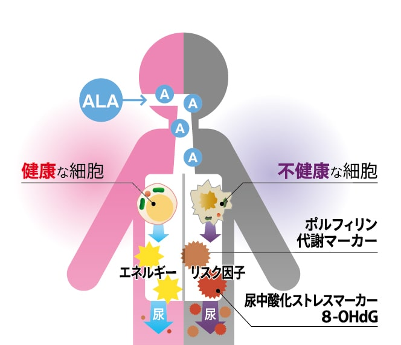

リスク検査 Noah
リスク検査と予防への取り組み
健康な細胞は自らエネルギーをつくり活動していますが、環境の変化で通常の生命機能が低下した細胞で は、エネルギー産生に利用できない物質が蓄積します。リスクチェックNoahは、この機能低下により尿に排 出される２つの指標（代謝マーカー、酸化ストレスマーカー）の変化を総合的に解析しています。 がん細胞などの機能が変化した細胞では、この解析指標が変化していることを利用し、リスク評価を行って います。

CANCER

英語でCancerという言葉は「がん」という意味のほかに「カニ」という意味もあります。
カニは砂に潜っており、見つけにくい生物ですが、砂地に出ている爪を手掛かりに見つけていくという点がリ スク検査のイメージに重なります。
私たちはカニの爪のような、病気のきっかけを見つける〜（文章再考）